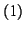
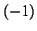
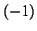

Lorsque nous avons un repère avec , on dit que le repère est
étroit. Dans le cas  et
,
on peut montrer que l'on a une base orthonormale. Ce qui est intéressant
avec les repères étroits, c'est que l'on une correspondance précise
des normes. Les bases d'ondelettes non décimées ou invariantes par
translation sont souvent utilisées pour construire des repères étroits.
et
,
on peut montrer que l'on a une base orthonormale. Ce qui est intéressant
avec les repères étroits, c'est que l'on une correspondance précise
des normes. Les bases d'ondelettes non décimées ou invariantes par
translation sont souvent utilisées pour construire des repères étroits.